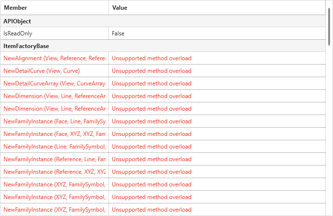
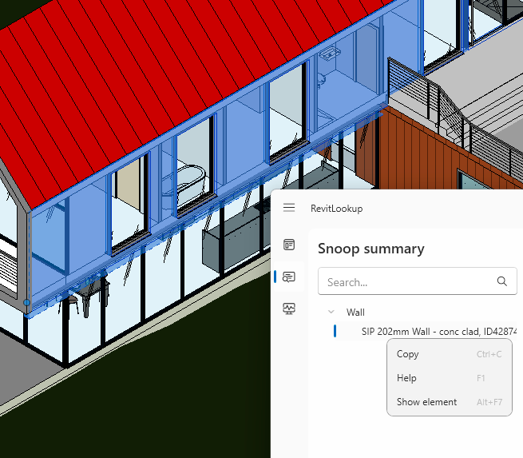
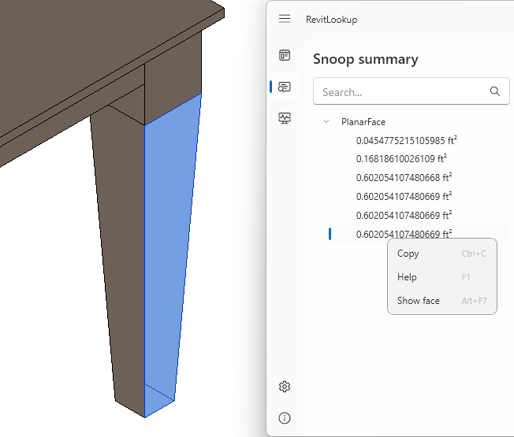
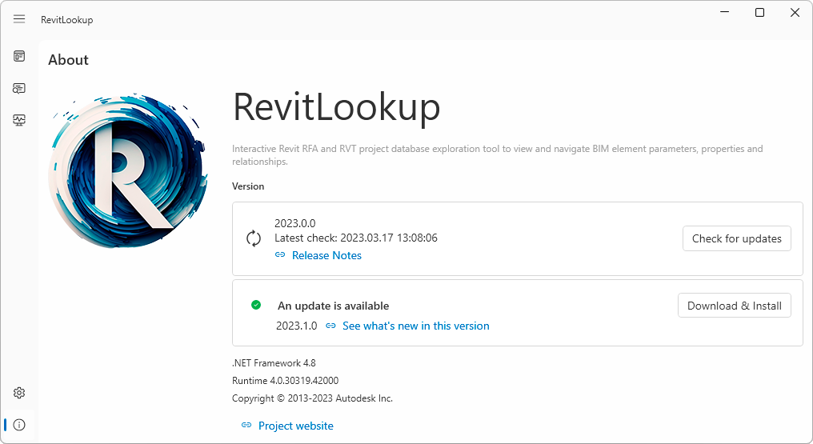

Further improving on last year's groundbreaking speed record, Roman Nice3point was prepared well in advance to release the corresponding RevitLookup 2024 update:
In this release, the entire code base has been completely rewritten from scratch with a redesigned user interface. New tools, OTA update, Windows 11 support
A brand-new user interface

Themes

Extended context menu

Wiki page: https://github.com/jeremytammik/RevitLookup/wiki/Context-actions
Tooltips

The Snoop Selection button has been moved to the Modify tab

Smooth navigation. Enable acceleration in Revit settings if you are having trouble with this option

Windows 11 Mica effect support
Windows 11 Snap Layouts support

Accent colour synced with OS

New logo
Extensions. Support new methods from the API and other libraries

Available extensions: https://github.com/jeremytammik/RevitLookup/wiki/Extensions
Displaying all methods that objects have, even if RevitLookup does not support them


Generic names support
| Before | Now |
 |  |
Multiple results for methods with overloads

Extensible storage moved to the GetEntity() method
Component manager. Explore AdWindows.dll and learn how the ribbon and user interface in Revit are arranged

PerformanceAdviser. Explore document performance issues
Explore BuiltIn and Forge units

Event monitor. Track all incoming events. Events from the RevitAPI.dll and RevitAPIUI.dll libraries are available. The search bar is used to filter results

Reworked search. Now you can search for multiple values by Name, Id, UniqueId, IfcGUID and Type IfcGUID parameters

Wiki page: https://github.com/jeremytammik/RevitLookup/wiki/Search-elements
Visual search in a project.
Showing elements:

Showing faces (Revit 2023 or higher):

Showing solids (Revit 2023 or higher):

Showing edges (Revit 2023 or higher):

OTA update. The RevitLookup update is now available directly from the plugin

Designed & Developed by Nice3point 🕊
Discussion about the Snoop Selection button placement #151:
What do you think of the new location of the "Snoop Selection" button? How do you feel about it and what is your opinion on it, should it be kept or made optional? The idea is that Revit automatically opens "Modify" tab, making the Snoop button available at all times.